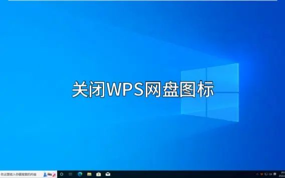
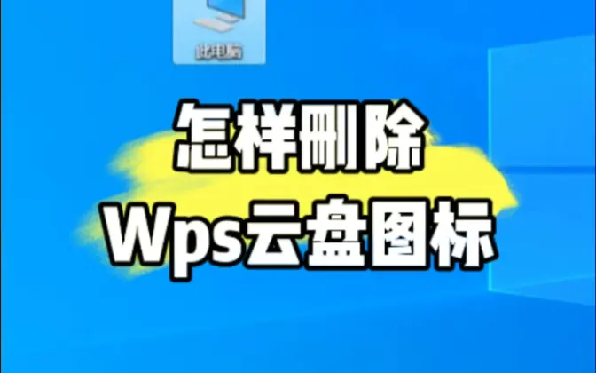
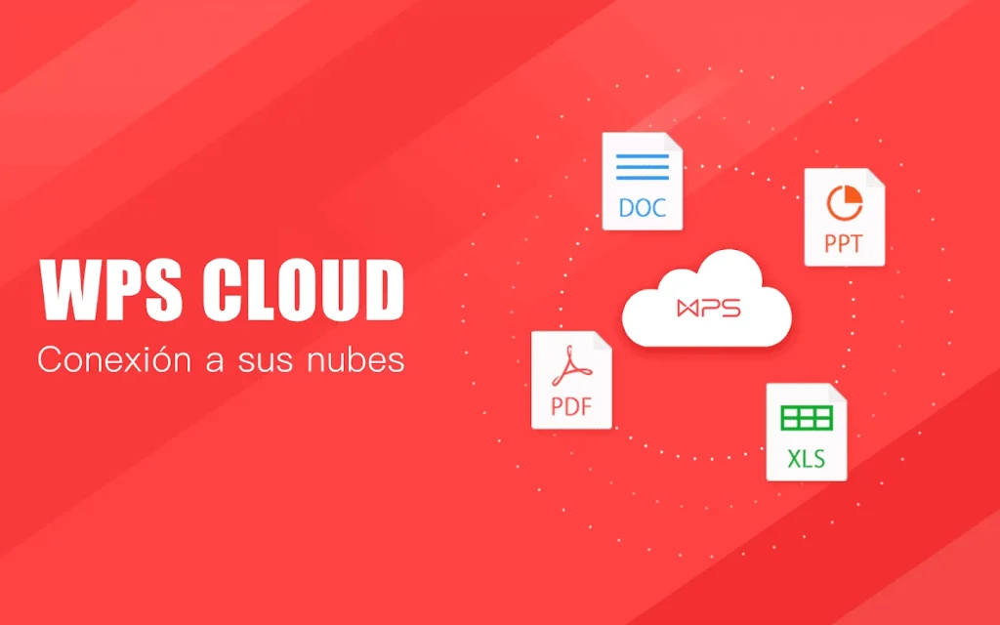
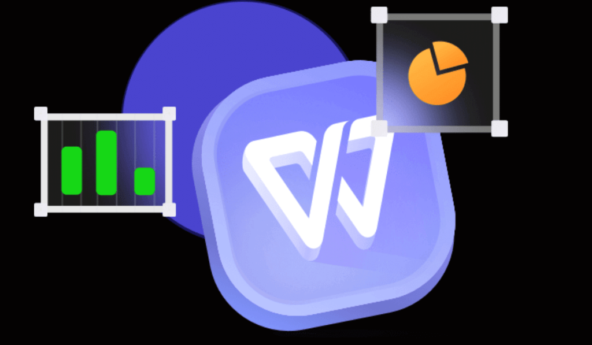

WPS网盘图标怎么删除？
2025年2月25日
要删除WPS网盘图标，首先右键点击桌面上的WPS网盘图标，选择“删除”或“卸载”。如果是任务栏上的图标，可以右键点击任务栏图标，选择“从任务栏移除”。如果图标依然显示，可以进入WPS网盘设置，找到“显示图标”选项并关闭，或者在控制面板中卸载WPS网盘客户端。

如何在桌面删除WPS网盘图标
桌面图标删除的简单步骤
- 右键点击桌面图标：在桌面找到WPS网盘的图标，右键点击该图标。弹出的菜单中选择“删除”选项。这样，图标将会被移除，桌面上不再显示WPS网盘的图标。
- 确认删除：系统会弹出确认删除的对话框，询问是否确定删除该图标。点击“确定”后，图标将从桌面上消失。需要注意的是，删除图标只是删除快捷方式，程序本身并未卸载。
- 通过快捷键删除：另一种方法是选择WPS网盘图标，按下键盘上的“Delete”键，也可以删除桌面上的图标。此方法适合快捷删除操作，方便高效。
删除图标后如何清理残留文件
- 检查文件残留：即使删除了桌面图标，WPS网盘的程序文件仍然可能保留在计算机的硬盘中。可以进入“控制面板”中的“程序和功能”，查看WPS网盘是否仍在安装列表中。如果没有卸载，可以手动卸载程序。
- 清理缓存文件：删除图标后，有些缓存文件可能仍然存在，可以使用磁盘清理工具扫描和清除这些缓存文件。进入“我的电脑”或“此电脑”，右键点击系统盘，选择“属性”中的“磁盘清理”选项，清理无用的缓存文件。
- 删除残余配置文件：WPS网盘删除后，某些配置文件可能会存留在用户文件夹中。可以手动访问系统盘（通常是C盘）中的“AppData”文件夹，删除与WPS网盘相关的文件夹，以彻底清理残留配置文件。
如何移除任务栏上的WPS网盘图标
从任务栏移除图标的方法
- 右键点击任务栏图标：首先，在任务栏找到WPS网盘的图标，右键点击该图标。在弹出的快捷菜单中，选择“从任务栏解除固定”选项，图标将从任务栏上移除。需要注意的是，这只会移除图标快捷方式，程序本身并不会被卸载。
- 通过设置调整图标显示：进入WPS网盘设置，查找是否有关于任务栏图标显示的选项。如果有，选择关闭或隐藏任务栏图标，这样就可以将WPS网盘的图标从任务栏中移除，而不影响程序的正常运行。
- 使用系统设置移除图标：在Windows设置中，找到“个性化”选项，进入“任务栏”设置。在“通知区域”下，点击“选择哪些图标显示在任务栏上”。在这里，你可以禁用WPS网盘图标的显示，将其从任务栏中移除。
如果无法移除任务栏图标怎么办
- 检查程序设置：如果右键点击图标后无法移除任务栏图标，可能是WPS网盘的设置限制了该操作。尝试进入WPS网盘的设置界面，查找相关的任务栏图标设置选项，并关闭任务栏图标的显示。
- 重新启动计算机：有时，任务栏图标移除操作不会立即生效，可能是因为系统缓存没有更新。此时，尝试重启计算机，查看任务栏上的图标是否已经被移除。
- 检查WPS网盘的系统托盘设置：如果图标依然无法移除，可能是WPS网盘仍然在系统托盘中运行。在任务栏的系统托盘区域（通常位于屏幕右下角），右键点击WPS网盘图标，选择“退出”或“关闭”。这样，WPS网盘会停止运行，任务栏图标自然会消失。

如何卸载WPS网盘并删除图标
通过控制面板卸载WPS网盘
- 打开控制面板：首先，按下“Windows + R”键，打开“运行”对话框，输入“control”并按回车，进入控制面板。在控制面板中选择“程序”选项，再点击“程序和功能”。
- 查找WPS网盘：在“程序和功能”列表中，找到WPS网盘，右键点击该程序，选择“卸载”。系统会弹出确认对话框，询问是否确定卸载WPS网盘。
- 完成卸载过程：点击“确定”后，系统会开始卸载WPS网盘。卸载完成后，WPS网盘的图标将从桌面和任务栏中消失，程序也将被从计算机中删除。
卸载后图标消失但文件依然存在的解决方法
- 检查残留文件夹：虽然WPS网盘的图标和程序已经卸载，但有时程序的部分文件夹和缓存文件仍然会留在系统中。你可以进入系统的“C:\Program Files”或“C:\Program Files (x86)”文件夹，检查是否存在WPS网盘的残留文件夹，并手动删除它们。
- 清理用户配置文件：WPS网盘可能在用户的“AppData”文件夹中留下配置文件。你可以打开“C:\Users\用户名\AppData”文件夹，找到“Roaming”或“Local”目录中的WPS相关文件夹，将它们删除，以彻底清理残留数据。
- 使用清理工具：为了确保彻底删除所有WPS网盘的文件，可以使用专业的清理工具，如CCleaner，扫描和删除残留的注册表项和文件。通过清理工具，可以确保没有WPS网盘的任何痕迹留在系统中。

如何在系统设置中关闭WPS网盘图标显示
通过系统设置隐藏图标
- 进入“任务栏设置”：首先，右键点击任务栏的空白区域，选择“任务栏设置”。在弹出的设置窗口中，找到“通知区域”部分，然后点击“选择哪些图标显示在任务栏上”。
- 关闭WPS网盘图标显示：在“通知区域”设置中，找到与WPS网盘相关的图标。将其开关切换为“关闭”状态，WPS网盘的图标就不会再显示在任务栏或系统托盘区域。
- 禁用启动时显示图标：如果你希望在WPS网盘启动时不显示图标，可以在WPS网盘的设置中查找“启动时显示图标”选项，关闭该选项后，图标将不会出现在任务栏上，虽然程序仍然会运行。
图标隐藏后如何恢复显示
- 重新进入“任务栏设置”：如果你希望恢复WPS网盘图标的显示，可以再次右键点击任务栏的空白处，选择“任务栏设置”。进入“通知区域”部分，点击“选择哪些图标显示在任务栏上”。
- 重新开启图标显示：在列表中找到WPS网盘图标，将其开关切换为“开启”状态，图标将重新出现在任务栏或系统托盘区域。如果图标不在列表中，确保WPS网盘程序在后台运行并重新启动。
- 检查WPS网盘设置：在WPS网盘的应用设置中，确保启用了显示图标的选项。如果此项被禁用，即使你在系统设置中打开图标，它也不会显示。可以进入WPS网盘的设置界面，勾选“显示任务栏图标”选项，确保图标会显示在任务栏上。

删除WPS网盘图标后无法重新显示怎么办
重新显示图标的操作步骤
- 检查任务栏设置：右键点击任务栏的空白处，选择“任务栏设置”，然后在“通知区域”中点击“选择哪些图标显示在任务栏上”。确保WPS网盘的图标开关设置为“开启”，图标就会重新出现在任务栏或系统托盘中。
- 通过WPS网盘设置恢复图标：打开WPS网盘应用，进入设置选项，确保启用了“启动时显示图标”功能。这样，即使图标被隐藏或删除，WPS网盘启动时会自动恢复显示图标。
- 重启WPS网盘应用程序：退出WPS网盘并重新启动程序，图标一般会在任务栏或系统托盘中自动恢复。如果重启后仍未显示，可以尝试重新安装WPS网盘。
设置问题导致图标无法显示的排查
- 系统设置检查：打开“个性化”设置，选择“任务栏”，然后检查是否启用了“通知区域图标显示”。确保“显示所有通知图标”选项被选中，否则WPS网盘图标不会出现在任务栏。
- 查看WPS网盘是否在运行：通过任务管理器检查WPS网盘是否正在运行。如果程序没有启动，手动启动WPS网盘，图标通常会出现在任务栏上。
- 系统权限或更新问题：有时Windows更新或权限设置会影响图标显示。检查系统是否有未安装的更新，或者是否存在用户权限问题，特别是在公司网络中，可能会有管理员限制图标显示。
如何删除WPS网盘桌面图标？
要删除WPS网盘的桌面图标，首先右键点击桌面上的WPS网盘图标，选择“删除”选项。图标将从桌面上消失，但WPS网盘程序本身并不会被卸载。如果需要彻底卸载WPS网盘，可以进入控制面板中的“程序和功能”进行卸载。
如何移除任务栏上的WPS网盘图标？
要移除任务栏上的WPS网盘图标，右键点击任务栏上的图标，选择“从任务栏解除固定”。如果图标仍然显示在系统托盘区域，可以进入WPS网盘设置，找到“启动时显示图标”的选项并禁用，或者在系统设置中隐藏任务栏图标。
删除图标后WPS网盘程序还在运行怎么办？
删除图标并不会停止WPS网盘程序的运行。如果图标删除后程序仍在后台运行，可以通过任务管理器退出WPS网盘进程，或者在WPS网盘设置中关闭启动时自动运行的选项。这样可以防止程序继续在后台运行。
最新文章
如果WPS未保存文档并意外关闭，可以通过“自动恢复”功能尝试找回数据。打开WPS…
在WPS中打印Excel文件，首先打开文件并点击左上角的“文件”按钮，选择“打印…
在WPS中使用格式刷，首先选中已设置好格式的单元格或文本，点击“开始”菜单中的“…
打开WPS Office，点击左上角“WPS文字”或“WPS表格”菜单。选择“选…
WPS PDF的目录功能位于左侧面板。在打开PDF文件后，点击界面左侧的“目录”…
要删除WPS网盘图标，首先右键点击桌面上的WPS网盘图标，选择“删除”或“卸载”…